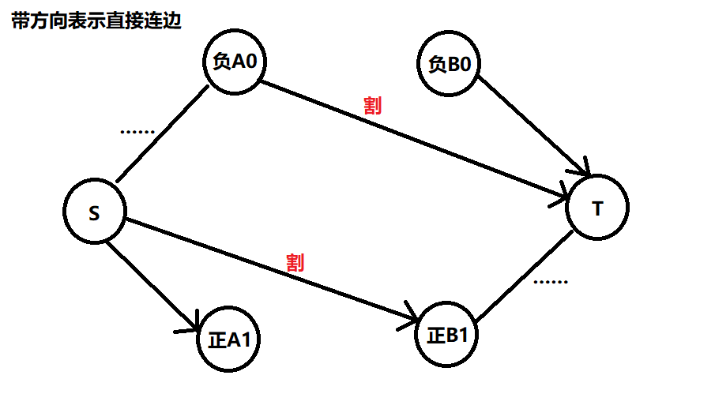

网络流
建议看胡伯涛2007年的论文——最小割模型在信息学竞赛中的应用
入门教程
因为不会证明所以没有入门教程，只有一丁点笔记
下文为方便假定没有重边，但有也能处理
设f（$f(x,y)=(x \to y)$这条边的流量，不存在为0）为流网络G（$c(x,y)=(x \to y)$这条边的容量，不存在为0）中的流，记$f(X,Y)=\sum_{x \in X} \sum_{y \in Y} f(x,y)$，额外流量$c_f(x,y)=c(x,y)-f(x,y)$
值得一提的是，对于边$(x \to y)$，$f(y,x)=-f(x,y),c(x,y)>0,c(y,x)=0$（虽然这玩意在代码中已经有体现了，但因为当初没好好学一直不理解最小割处理无向图之类的，所以这是在敲了无数遍最小割后的我依然跑来重学的动力）
设p为残留网络$G_f$上增广路，则$c_f(p)=min\ c_f(x,y)>0$
存在定理：当且仅当不存在增广路时，流f为该图的最大流
最大流解决方案
Edmond-Karp 理论上界是 $nm^2$ ，但通常可以解决$10^3$ ~ $10^4$ 的规模
EK的缺点主要是，每次只找出一条增广路，Dinic算法试图改进这一点
- 通过bfs得出残余网络中的分层图（显然是一个dag），可以从T开始，能减少增广时候的常数
- 通过dfs得出多条增广路，回溯时更新流量
- 理论上界是 $n^2m$ ，但通常可以解决$10^4$ ~ $10^5$ 的规模
特别地，对于二分图，时间复杂度可以达到$O(m \sqrt n)$
当前弧优化：当层次确定的时候，反向弧是否使用也是确定的
那么如果一条边流完了，可以在边链表中去除（有点类似欧拉回路时那个优化）
因为是层次图，不用担心 dfs 对第一个有效边数组的影响
|
|
最小割
定义割将点集分为S和T，割的净流定义为$f(S,T)$，割的容量定义为$c(S,T)=\sum_{x \in S,y \in T} c(x,y)$，最小割定义为割的容量最小的割
神奇定理1：任意一个流f，任意一个割的净流=流f的大小（$\sum_{x \in S,y \in T} f(x,y)=\sum_{t \in V} f(st,t)=\sum_{t \in V} f(t,ed)$）
神奇定理1的证明：$f(S,T)=f(S,V)-f(S,S)=f(S,V)=f(st,V)+f(S \setminus st,V)=f(st,V)$，最后一步用到了$f(S \setminus st,V)=0$，这个的理解可以考虑为st不流入任何流量（你是否在惊讶这货居然贴了证明）
不神奇但重要定理2：显然对于一个割，$割的净流\le割的容量$。根据神奇定理1，可知最小割不小于最大流
那现在要让最小割最小，尝试能否达到下界，注意到割断开的边都是不在残余网络中的边，通过从st开始dfs可以直接构造出最小割（学了这么久OI终于知道咋构造了），显然不可能访问到ed（意味着找到增广路）
最小割的数学形式模型：设01变量$x=[与汇连通]$
$(st\to x,c)=c*x,(x \to ed)=c(1-x),(x \to y)=c(1-x)y$
最大权闭合子图问题：
闭合子图：只进不出的子图，可用于处理依赖关系
很容易贪心地想到，最优情况是所有正权点，但为了闭合要有所割舍
考虑用网络流决策，选一部分点这个模型其实就是割，设最后与S连通表示选
建边方式：$(S \to 正权点x,val_x),(负权点x \to T,-val_x)$，若选x必选y则$(x \to y,\infty)$（显然依然可以选y不选x）

此时任何合法割都能让A是个闭合子图，现在考虑最大化A：$割=B1-A0,A=A0+A1=A1+B1-割=正权和-割$，故求最小割即可
上下界网络流
点SS、TT为超级源、汇；可行流的条件是流量平衡（$\forall d_i=in_i-out_i=0$），零流也是可行流
无源汇可行流：code
先以下界为初始流，边的容量为$上界-下界$，然后我们希望得到一个流量平衡的流
$若d_i>0，(SS \to i=d_i)；若d_i<0, (i \to TT=-d_i)$
这个还是比较显然的，就是给每个点一些配额去把多的流量流出去，跑最大流使流量平衡
有源汇可行流：加入$(ed \to st=\infty)$，于是就是无源汇的了，流量即$ed \to st$此时流量（假装流掉）
这个思想有个不错的题目，「CF708D」Incorrect Flow
有源汇最大流：先得到可行流，在此之上的操作都能保证其依然是可行流，那么在这个残余网络上，删掉$(ed \to st)$（SS和TT可以不删，已经满流不会再用到），跑st到ed的最大流即可，code；最小流直接ed到st用最大流退流即可，code（请忽略注释）
有源汇可行费用流：只要将有源汇可行流的最大流改成最小费用最大流即可，裸题是「AHOI2014/JSOI2014」支线剧情
最小费用最大流
本质上其实就是把EK中bfs换成能处理边权的spfa（因为dinic无法处理）
处理负环待填
板子：
|
|
题解：记$o_{i,j}=[l_j \le i \le r_j]$，则就是要在满足$\forall i \in [1,n],\sum_{j=1}^m o_{i,j}X_{j} \ge ned_i$的前提下最小化$\sum_{j=1}^m X_jcost_j$，其中X为变量
这里o的特殊性是一段区间，可以差分一下，因此要搞成等式：$\sum_{j=1}^m o_{i,j} X_j-R_i=ned_i,R_i \ge 0$
差分后，变量R和X因为原本是区间，现在一定是出现两次且系数为1和-1（差分后n+1也是一条方程），而且同样很重要的是常量和为0。将变量看做流网络中边上的流量就能满足非负，移项后就是个流量平衡模型，常量和为0保证了最大流一定能达到$\sum ned_i-ned_{i-1}>0$即入流是满的从而满足上面的方程，最小费用最大流即可。
|
|